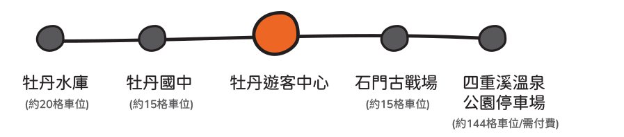
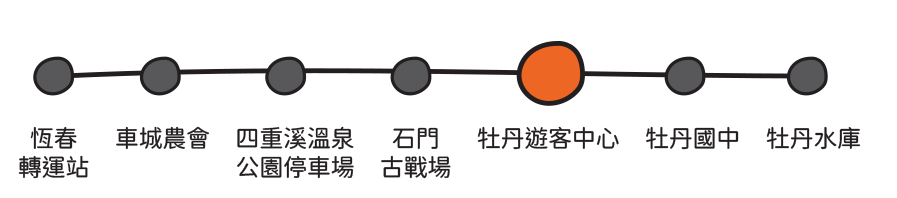

三天音樂演出，從部落古謠、地方創作、獨立音樂、流行音樂到 DJ，讓不同聲音在風域半島相遇。
OCT23-25
時間｜14:00-21:00
地點｜牡丹遊客中心主場地


- 10/23查瑪克・巴阿立佑司、那屋瓦、高士古謠薪唱、黑旋風、DJ NAVI
- 10/24旭海青年、巴查克、舞炯恩、戴愛玲、DJ GIYU
- 10/25亞立山大、三十而立、壓滿俱樂部、suming 舒米恩、DJ NASI
逛一場屬於半島的戶外市集
OCT23-25
時間｜14:00-21:00
地點｜牡丹遊客中心主場地
集合風域半島與屏東在地品牌，從地方飲食、小農產品、手作工藝、文創選物到特色餐車，每日邀集35組以上品牌參與，在市集裡吃東西、逛品牌，也認識生活在這片土地上的人。
活動詳情與報名
逛一場屬於半島的戶外市集
OCT23-25
時間｜14:00-21:00
地點｜牡丹遊客中心主場地
集合風域半島與屏東在地品牌，從地方飲食、小農產品、手作工藝、文創選物到特色餐車，每日邀集35組以上品牌參與，在市集裡吃東西、逛品牌，也認識生活在這片土地上的人。
- 10/23牡丹鄉旭海村《植物敲染》、車城鄉四重溪《注連繩製作》
- 10/24牡丹鄉高士村《鑫工製作》、VUVU MADE 有山手製造 藤編藍製作
- 10/25滿州鄉里德村《大果藤榕DIY》、牡丹鄉四林村《祈福包製作》
活動詳情與報名
跟著百工認識風域半島
OCT23-25
時間｜14:00-21:00
費用｜免費 (現場自由參加)
專為親子設計的半島探險！大手牽小手，拿著「探險日記地圖」一起找線索、解任務，在半島邊走邊玩，把沿途發現與學到的事，寫進自己的風域學習日誌。
特色遊程
離開主場，跟著風往半島裡走
從車城、牡丹到滿州，規劃五條風域特色遊程，走進高士、四林、九棚、里德與四重溪。沿著山林步道、部落與聚落慢慢旅行，吃地方風味、聽文化故事，也親手參與農事與文化體驗，用一天的時間，認識風域半島不同的生活風景。
活動詳情
特色遊程
離開主場，跟著風往半島裡走
從車城、牡丹到滿州，規劃五條風域特色遊程，走進高士、四林、九棚、里德與四重溪。沿著山林步道、部落與聚落慢慢旅行，吃地方風味、聽文化故事，也親手參與農事與文化體驗，用一天的時間，認識風域半島不同的生活風景。
活動詳情
特色遊程
離開主場，跟著風往半島裡走
從車城、牡丹到滿州，規劃五條風域特色遊程，走進高士、四林、九棚、里德與四重溪。沿著山林步道、部落與聚落慢慢旅行，吃地方風味、聽文化故事，也親手參與農事與文化體驗，用一天的時間，認識風域半島不同的生活風景。
活動詳情
特色遊程
離開主場，跟著風往半島裡走
從車城、牡丹到滿州，規劃五條風域特色遊程，走進高士、四林、九棚、里德與四重溪。沿著山林步道、部落與聚落慢慢旅行，吃地方風味、聽文化故事，也親手參與農事與文化體驗，用一天的時間，認識風域半島不同的生活風景。
活動詳情
特色遊程
離開主場，跟著風往半島裡走
從車城、牡丹到滿州，規劃五條風域特色遊程，走進高士、四林、九棚、里德與四重溪。沿著山林步道、部落與聚落慢慢旅行，吃地方風味、聽文化故事，也親手參與農事與文化體驗，用一天的時間，認識風域半島不同的生活風景。
活動詳情
活動接駁服務為便利民眾往返各活動據點，本案規劃兩條免費接駁路線。
- 14:00-16:30｜每 30 分鐘發車，每時段配置 1 班接駁車
- 16:30-21:30｜每 15 分鐘發車，每時段配置 2 班接駁車
- 提供自行開車民眾停車後轉乘接駁服務
- 串連周邊 4 處停車場與活動會場，共提供約 200 格停車位

- 14:00-22:00｜每 60 分鐘發車，提供定時接駁服務
- 提供搭乘大眾運輸旅客轉乘，銜接活動會場
- 串連恆春、車城及主要活動據點，完善區域接駁動線

自行開車
- 建議民眾由國道3號南下，接台1線 / 屏鵝公路前往車城，再轉入縣道199線，沿四重溪、石門古戰場即可抵達牡丹遊客中心。
- 活動期間開放三處停車空間供民眾停放車輛：石門古戰場停車場、牡丹國中停車場、牡丹水庫停車場。
- 停車後可轉乘A路線停車場接駁車前往活動會場，減少車輛集中進入會場周邊。
大眾運輸
高雄出發 >
- 高鐵左營站、高雄車站搭乘9189 墾丁快線至恆春轉運站。
- 或搭乘台鐵至枋寮站後，轉乘客運前往恆春轉運站。
屏東出發 >
- 台鐵至枋寮站。
- 轉乘客運前往恆春轉運站。
恆春轉運站搭乘 >
- 屏東客運 301（恆春－石門）
- 屏東客運 302（恆春－旭海）
- 或直接轉乘本活動 B 路線接駁車 前往牡丹遊客中心。